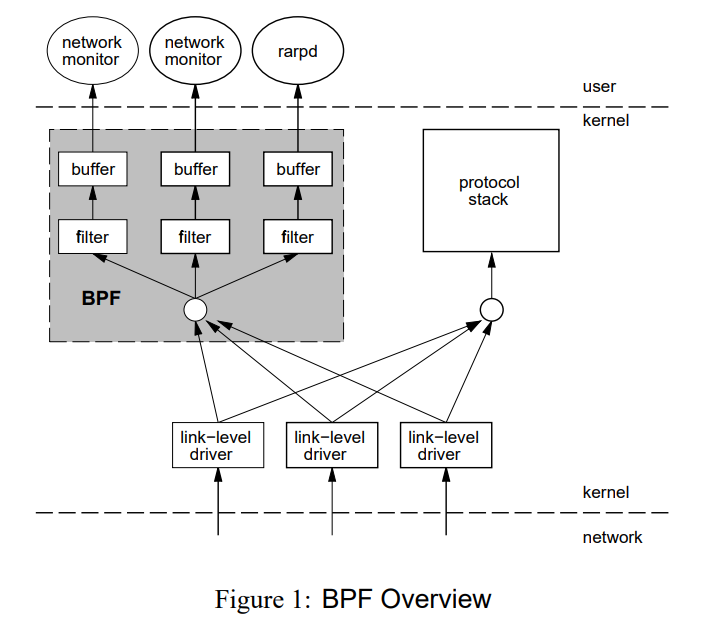
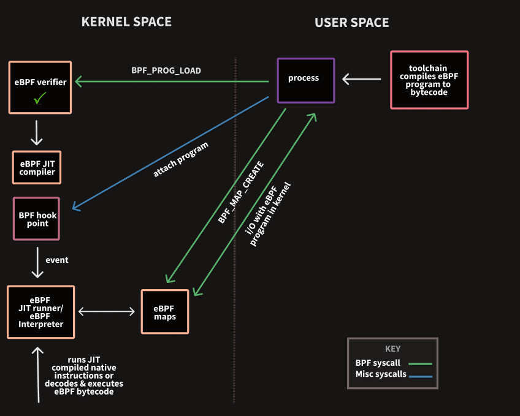

BPF 和 eBPF
BPF
BPF（Berkeley Packet Filter）由Steven McCanne 和 Van Jacobson的一篇论文提出，论文中提到：用户级别的数据包捕获功能需要跨内核和用户空间来复制数据包，结果导致性能下降。
于是提出了一种新的框架，直接在内核中进行过滤数据包。BPF根据用户编写的过滤规则对数据包进行匹配，如果符合就放到接收队列。然后用户再把接收队列的数据包从内核空间拷贝到用户空间，这样就减少了无用的数据包拷贝。

机器码可以在物理机上直接执行，伪机器码不能直接执行，需要在虚拟机上执行。
BPF指令集是伪机器码，虚拟机上需要一条条解析为机器码才能够执行，所以执行效率很低，如果有了JIT（Just In Time），就能直接把BPF编译成机器码，能大大加快BPF程序的执行速度。

tcpdump等工具就是基于BPF框架实现的。
eBPF
从内核3.18版本开始，Linux内核提供了eBPF（extended BPF），除了网络数据包过滤，它还能够用于非网络相关的功能（比如perf_events、kprobes、uprobes、tracepoints）。
传统的BPF，被称为cBPF（classical BPF）。除非特别说明，BPF指的是cBPF和eBPF的统称。
开发工具链：BCC、bpftrace、ebpf-go、libbpf
1. eBPF可以做什么？
- 可以执行高性能数据包处理（比如XDP）
- 可以限制进程能否使用一些系统调用（比如seccomp）
- 可以调试内核、性能分析（比如kprobes、perf）
2. eBPF 验证
在加载每个BPF程序之前，都会执行一些检查：
- 权限
- 有界循环
- 不得使用未初始化变量
- 越界访问
- eBPF程序大小限制
- 根据程序类型，限制可以调用哪些内核函数、可以访问哪些数据结构、是否可以访问网络数据包内容

3. eBPF 系统调用命令
#include <linux/bpf.h>
int bpf(int cmd, union bpf_attr *attr, unsigned int size);
enum bpf_cmd {
BPF_MAP_CREATE, // 创建一个map，并返回其关联的文件描述符。（会自动打开close-on-exec标志）
BPF_MAP_LOOKUP_ELEM,
BPF_MAP_UPDATE_ELEM,
BPF_MAP_DELETE_ELEM,
BPF_MAP_GET_NEXT_KEY,
BPF_PROG_LOAD, // 验证并加载eBPF程序，返回其关联的文件描述符。（会自动打开close-on-exec标志）
BPF_OBJ_PIN, // 将eBPF程序或map固定到指定的文件路径上
BPF_OBJ_GET,
BPF_PROG_ATTACH, // 附加eBPF程序到指定附加类型的Hook上
...
BPF_PROG_QUERY, // 获取与指定附加类型的Hook关联的eBPF程序的信息
BPF_BTF_LOAD, // 验证并加载 BTF（BPF Type Format）元数据到内核，返回其关联的文件描述符
...
BPF_LINK_CREATE, // 附加eBPF程序到指定附加类型的Hook上，并返回一个文件描述符句柄，用于管理link
...
BPF_PROG_BIND_MAP, // 绑定map到eBPF程序
};
4. eBPF 术语
- 加载（Load）
加载程序指通过系统调用 bpf（BPF_PROG_LOAD，...） 将其指令注入到内核。
注入前通过了验证程序，如果启用了 JIT 编译，程序可能会被JIT编译。
注入后，程序位于内核内存中，它有一个引用计数器，内核一直保存它，直到计数器变为零。
- 附加（Attach）
eBPF程序被附加到指定附加类型的Hook上。
用户将eBPF程序attach到某个事件上，当这个事件触发的时候，就会执行这个eBPF程序。（所以eBPF是基于事件触发的）
附加类型取决于程序类型，只有部分程序类型（cgroup、flow dissector、LIRC、sockmap、sock_ops）有这个概念。
某些附加程序（网络、cgroup）会增加其引用计数，以便应用程序退出而不会从内核删除eBPF程序。
- 固定（Pin）
固定是保存对eBPF对象（prog、map、link）的引用的方法。只要一个对象被固定，它就保留在内核中。固定程序可以防止被删除，但不会运行。
- 链接（Link）
首先，不要跟 ELF目标文件的链接 混淆，完全是无关的东西。
对于XDP程序，用户应用程序可以附加程序并安全终止，由于增加了引用计数，程序能够一直保持附加和加载状态，而不会从内核删除。
对于跟踪，通常调用perf_event_open得到一个文件描述符，进行需要保持运行才能保持此文件描述符打开。当程序退出，文件描述符被关闭，程序被删除。
引入eBPF链接来附加程序作为一个解决方法，使其更容器保持附加。当用户应用程序终止时，可以使用固定链接来保持持久性。

5. eBPF 程序类型
使用BPF_PROG_LOAD加载的程序类型决定了：
- 程序可以附加到哪里
- 程序允许调用哪些内核辅助函数
- 是否可以直接访问网络数据包
enum bpf_prog_type {
BPF_PROG_TYPE_UNSPEC,
BPF_PROG_TYPE_SOCKET_FILTER, // 网络数据包过滤器
BPF_PROG_TYPE_KPROBE, // 是否触发kprobe
BPF_PROG_TYPE_SCHED_CLS, // TC classifier
BPF_PROG_TYPE_SCHED_ACT, // TC action
BPF_PROG_TYPE_TRACEPOINT, // 是否触发tracepoint
BPF_PROG_TYPE_XDP, // XDP
BPF_PROG_TYPE_PERF_EVENT, // 是否触发perf事件处理程序
BPF_PROG_TYPE_CGROUP_SKB, // cgroup 的网络数据包过滤器
BPF_PROG_TYPE_CGROUP_SOCK, // cgroup 的网络数据包过滤器，可修改套接字选项
BPF_PROG_TYPE_LWT_IN, // LWT_* 轻量级隧道的网络数据包过滤器
BPF_PROG_TYPE_LWT_OUT,
BPF_PROG_TYPE_LWT_XMIT,
BPF_PROG_TYPE_SOCK_OPS, // 设置socket参数的程序
BPF_PROG_TYPE_SK_SKB, // 套接字之间的数据包过滤器
BPF_PROG_TYPE_CGROUP_DEVICE,
BPF_PROG_TYPE_SK_MSG,
BPF_PROG_TYPE_RAW_TRACEPOINT,
BPF_PROG_TYPE_CGROUP_SOCK_ADDR,
BPF_PROG_TYPE_LWT_SEG6LOCAL,
BPF_PROG_TYPE_LIRC_MODE2,
BPF_PROG_TYPE_SK_REUSEPORT,
BPF_PROG_TYPE_FLOW_DISSECTOR,
BPF_PROG_TYPE_CGROUP_SYSCTL,
BPF_PROG_TYPE_RAW_TRACEPOINT_WRITABLE,
BPF_PROG_TYPE_CGROUP_SOCKOPT,
BPF_PROG_TYPE_TRACING,
BPF_PROG_TYPE_STRUCT_OPS,
BPF_PROG_TYPE_EXT,
BPF_PROG_TYPE_LSM,
BPF_PROG_TYPE_SK_LOOKUP,
BPF_PROG_TYPE_SYSCALL, /* a program that can execute syscalls */
};
6. eBPF Map类型
eBPF程序使用的主要数据结构是map，这是一种通用数据结构，允许数据在内核和用户空间直接来回传递。

enum bpf_map_type {
BPF_MAP_TYPE_UNSPEC,
BPF_MAP_TYPE_HASH, // 哈希表
BPF_MAP_TYPE_ARRAY, // 数组
BPF_MAP_TYPE_PROG_ARRAY, // eBPF程序对应的文件描述符数组；用于实现跳转表和子程序来处理特定的数据包协议
BPF_MAP_TYPE_PERF_EVENT_ARRAY, // 存储指向struct perf_event的指针，用于读取和存储perf事件计数器
BPF_MAP_TYPE_PERCPU_HASH, // percpu 哈希表
BPF_MAP_TYPE_PERCPU_ARRAY, // percpu 数组
BPF_MAP_TYPE_STACK_TRACE, // 存储堆栈跟踪
BPF_MAP_TYPE_CGROUP_ARRAY,
BPF_MAP_TYPE_LRU_HASH, // LRU 哈希表
BPF_MAP_TYPE_LRU_PERCPU_HASH, // LRU percpu 哈希表
BPF_MAP_TYPE_LPM_TRIE, // 最长前缀匹配树，用于将IP地址匹配到某个范围
BPF_MAP_TYPE_ARRAY_OF_MAPS, // array in map
BPF_MAP_TYPE_HASH_OF_MAPS, // hash in map
BPF_MAP_TYPE_DEVMAP, // 用于存储和查找网络设备
BPF_MAP_TYPE_SOCKMAP, // 用于存储和查找套接字
BPF_MAP_TYPE_CPUMAP,
BPF_MAP_TYPE_XSKMAP,
BPF_MAP_TYPE_SOCKHASH,
BPF_MAP_TYPE_CGROUP_STORAGE,
BPF_MAP_TYPE_REUSEPORT_SOCKARRAY,
BPF_MAP_TYPE_PERCPU_CGROUP_STORAGE,
BPF_MAP_TYPE_QUEUE,
BPF_MAP_TYPE_STACK,
BPF_MAP_TYPE_SK_STORAGE,
BPF_MAP_TYPE_DEVMAP_HASH,
BPF_MAP_TYPE_STRUCT_OPS,
BPF_MAP_TYPE_RINGBUF, // 环形缓冲区
BPF_MAP_TYPE_INODE_STORAGE,
BPF_MAP_TYPE_TASK_STORAGE,
};
实验
内核源码目录 [samples/bpf] 下面有很多例子可供学习。
# 安装依赖组件
$ apt install build-essential git make libelf-dev clang llvm strace tar bpfcc-tools linux-headers-$(uname -r) gcc-multilib flex bison libssl-dev -y
# 下载内核源码
$ apt search linux-source
$ apt install linux-source-5.4.0
# 解压
$ tar -jxvf /usr/src/linux-source-5.4.0.tar.bz2 -C /workspace
$ cd /workspace/linux-source-5.4.0
# 编译
$ make headers_install
$ make menuconfig
$ make M=samples/bpf # 如果配置出错，可以使用 make oldconfig && make prepare 修复
1. Hello eBPF
功能：跟踪系统调用execve
内核态程序 hello_kern.c
#include <linux/bpf.h>
#include "bpf_helpers.h"
#define SEC(NAME) __attribute__((section(NAME), used))
SEC("tracepoint/syscalls/sys_enter_execve")
int bpf_prog(void *ctx)
{
char msg[] = "Hello eBPF!\n";
bpf_trace_printk(msg, sizeof(msg));
return 0;
}
char _license[] SEC("license") = "GPL";
用户态程序 hello_user.c
#include <stdio.h>
#include "bpf_load.h"
int main(int argc, char **argv)
{
if( load_bpf_file("hello_kern.o") != 0)
{
printf("The kernel didn't load BPF program\n");
return -1;
}
read_trace_pipe();
return 0;
}
修改Makefile，对应位置添加
hostprogs-y += hello
hello-objs := bpf_load.o hello_user.o
always += hello_kern.o
编译并运行
$ make M=samples/bpf
# 要求root权限
$ sudo ./hello
<...>-2299 [001] .... 299.270775: 0: Hello eBPF!
<...>-2327 [002] .... 301.887165: 0: Hello eBPF!
注意，内核针对一些漏洞（利用eBPF进行容器逃逸、Rootkit攻击）收敛了相关权限。如果安装过cilium，cilium会设置 /proc/sys/kernel/unprivileged_bpf_disabled 为1。bpf系统调用首先会先检查该参数。
- 值为0表示允许非特权用户调用bpf
- 值为1表示禁止非特权用户调用bpf且该值不可再修改，只能重启后修改
- 值为2表示禁止非特权用户调用bpf，可以再次修改为0或1